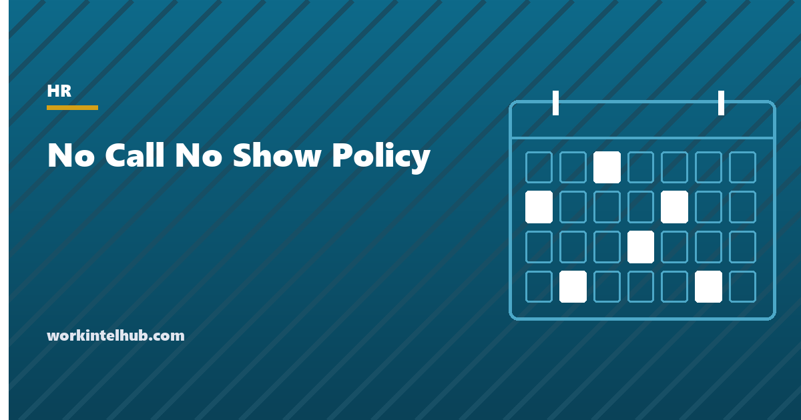

No Call No Show Policy

A no call, no show is a scheduled shift an employee neither works nor reports. It is the absence that costs the most, because nobody knew to cover it, and the one managers most want a simple rule for: three strikes, or three days and you are out. The simple rule exists and works, on one condition. The policy has to say what the rule does not apply to, because the employee who did not call from a hospital bed, or from a domestic violence shelter, or on the third day of an FMLA-qualifying illness, is protected by law, and a policy that counts them anyway is the exhibit in the claim that follows.
The generator below writes the policy with the call-in rule, the escalation, the job abandonment threshold and the protected-absence exception. The rest of the page covers each clause, how to handle a no-show on the day, and the line between an unreported absence and a resignation.
No call no show policy generator
Nothing typed here leaves your browser. The policy includes the protected-absence exception and the contact-before-abandonment steps, which are the two clauses that decide whether it survives a claim.
The clauses and why each is there
| Clause | What it does | Common failure |
|---|---|---|
| Reporting rule | Says how and by when to report, and that telling a colleague does not count | "Notify your supervisor" with no time and no channel, so every dispute is about whether a text counted |
| Definition | Separates no-show from late reporting and from ordinary unexcused absence | Every late call treated as a no-show, which the escalation was not designed for |
| Consequences | Escalates in steps with an active period, and reserves the right to skip | Immediate termination on the first occurrence for some employees and not others |
| Job abandonment | Sets the threshold and the contact attempts before it is declared | Declared on day two with no attempt to reach the employee |
| Protected absences | Excludes emergencies and legally protected leave | Missing, so an FMLA absence is counted and a claim follows |
| Return-to-work conversation | Asks before acting whether the absence was protected | The warning is issued at the door and the reason emerges at the hearing |
The reporting rule should give one hour before the shift as the default. Thirty minutes is workable for shift work where the rota is known; four hours suits roles where cover must be arranged. The channel matters as much as the time: a phone call or a confirmed message through the scheduling system, never a text to a colleague, and the policy says so.
What cannot be counted
The exception clause is the policy's most important sentence. Under 29 CFR 825.302, an employee who needs FMLA leave for an unforeseeable reason must give notice "as soon as practicable", which the regulation expects to be the same or next business day in ordinary circumstances, but which can be later where the employee is incapacitated or unable to communicate. A no-show on the first day of an emergency admission is not an unreported absence once the employee or a family member calls. The same logic applies under the ADA for disability-related absences, under state sick leave laws (which in California expressly bar counting protected sick leave as an occurrence), under jury and witness service rules, military leave, and the domestic violence leave laws in around twenty states.
The practical rule for managers: before applying any consequence, ask why. The return-to-work conversation in the generator exists so that the question is asked in every case, by policy, and recorded. If the answer raises a protected reason, the absence goes to HR and the FMLA or accommodation process starts. If it does not, the consequence applies. The attendance policy and this one should share the same exception clause, word for word.
From no-show to job abandonment
Job abandonment is the point at which repeated unreported absence is treated as a resignation. Three consecutive scheduled shifts is the most common threshold, and no federal law sets one; New Jersey uses five consecutive days in its unemployment rules, and an employer there that declares abandonment after three should expect the claim to be paid. The threshold is less important than the process around it. Before declaring abandonment, make and record contact attempts on each missed day, by more than one channel, and send a letter to the address on file stating that the employee will be treated as having resigned on a given date unless they make contact. Our job abandonment guide has the letter and the state-by-state notes.
Two things follow from a declared abandonment. The separation is voluntary for unemployment purposes in most states, provided the contact attempts are documented, and the employee is still owed final pay on the state's deadline for resignations, with any accrued leave the state or the policy requires. Treating a no-show as a resignation does not shorten the employer's obligations; it changes which set applies.
Handling a no-show on the day
- Cover the shift. Before anything else. The schedule template shows who is available.
- Try to reach the employee within the first hour, by phone, then text and email. Record the time and the channel.
- Do not decide anything until they are reached or the abandonment threshold passes. The first day is an unknown, not a violation.
- When they return, ask why before the shift starts. Record the answer. Route protected reasons to HR; apply the policy to the rest.
- Issue the consequence in writing, using the write-up template, with the date of the missed shift, the reporting rule, the prior occurrences and the next step.
- Log it. Occurrences, dates and outcomes, so the pattern is visible and the escalation is consistent across the team. The absenteeism guide covers what the pattern means.
Consistency is the whole defence. A policy applied to some employees and waived for others is evidence of discrimination whatever the intent, which is why the generator's escalation is fixed and the discretion is stated in one place.
Key takeaways
- A no call, no show is a scheduled shift neither worked nor reported by the deadline and channel the policy sets. Telling a colleague is not reporting.
- Escalate in steps with an active period, apply the same steps to everyone, and reserve the right to skip for serious cases.
- Absences that could not be reported because of an emergency, and any absence protected by FMLA, ADA, state sick leave, jury, military or domestic violence laws, are never counted.
- Ask why before applying a consequence, every time, and record the answer. Protected reasons go to HR.
- Job abandonment after three consecutive shifts is common; New Jersey uses five. Document contact attempts on every missed day and send a letter before declaring it.
- A declared abandonment is a resignation for unemployment purposes but final pay is still due on the state's deadline.
Frequently asked questions
What counts as a no call, no show?
A scheduled shift the employee does not work and does not report by the deadline and through the channel the policy sets, typically at least one hour before the start by phone or a confirmed message in the scheduling system. A late call is an unexcused absence, not a no-show, unless the employee could have called earlier.
How many no call, no shows before termination?
Most policies escalate: a documented verbal warning, a written warning, then a final warning or termination, with warnings active for six to twelve months. Three consecutive unreported shifts is commonly treated as job abandonment. There is no federal rule; the policy sets the number and must apply it consistently.
Can an employee be fired for one no call, no show?
In at-will states, yes, if the reason was not protected and the policy is applied the same way to everyone. Most employers reserve immediate termination for cases causing serious harm and use warnings otherwise, because a first occurrence is often an emergency and firing for one invites both unemployment claims and discrimination allegations.
What if the employee could not call because of an emergency?
Then it is not a no call, no show under a lawful policy. FMLA regulations require notice as soon as practicable, which can be after the absence where the employee was incapacitated, and state sick leave and other laws protect absences the employee could not report. The policy should say so and managers should ask before acting.
How long before a no-show becomes job abandonment?
Three consecutive scheduled shifts is the most common threshold; New Jersey's unemployment rules use five consecutive days. Before declaring abandonment, attempt contact by more than one channel on each missed day, record every attempt, and send a letter stating the date on which the employee will be treated as having resigned unless they make contact.
Is final pay owed after a no call, no show termination?
Yes. Whether the separation is treated as a resignation by abandonment or a termination, final pay including any accrued leave the state or policy requires is due on the state's deadline, and any state separation notice must be provided.